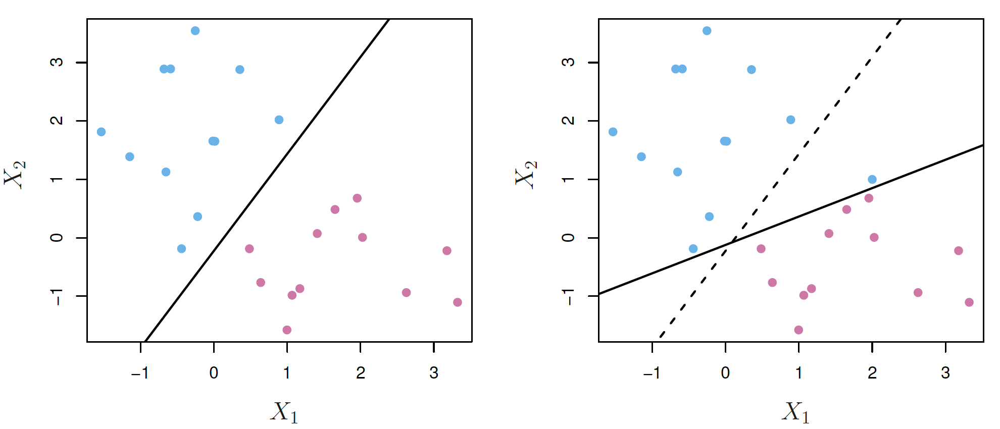
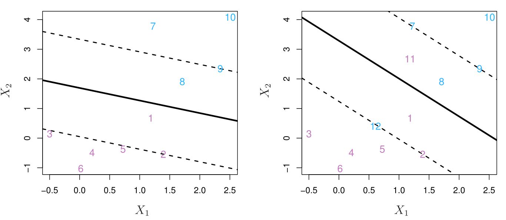

Dr. Cheng-Han Yu Department of Mathematical and Statistical Sciences Marquette University
Support Vector Machines (SVMs)
SVMs have been shown to perform well in a variety of settings, and are often considered one of the best “out of the box” classifiers.
Start with the maximal margin classifier (1960s), then the support vector classifier (1990s), and then the support vector machine.
Classifier
\({\cal D}_n = \{\mathbf{x}_i, y_i\}_{i=1}^n\)
In SVM, we code the binary outcome \(y\) as 1 or -1, representing one class and the other.
The goal is to find a linear classifier \(f(\mathbf{x}) = \beta_0 + \mathbf{x}' \boldsymbol \beta\) so that the classification rule is the sign of \(f(\mathbf{x})\):
The \(f(\mathbf{x}) = \beta_0 + \mathbf{x}' \boldsymbol \beta= 0\) is a hyperplane, which is a subspace of dimension \(p-1\) in the \(p\)-dimensional space.
\(f(\mathbf{x}) = \beta_0 + \beta_1X_1+\beta_2X_2 = 0\) is a straight line (hyperplane of dimension one) in the 2-dimensional space.
The classification rule is \(y_i f(\mathbf{x}_i) >0\).
Maximum-margin Classifier
If our data can be perfectly separated using a hyperplane, there exists an infinite number of such hyperplanes. But which one is the best?
A natural choice is the maximal margin hyperplane (optimal separating hyperplane), which is the separating hyperplane that is farthest from the training points.
Maximum-margin Classifier
library(e1071)svm_fit<-svm(y~., data =data.frame(x, y), type ='C-classification', kernel ='linear', scale =FALSE, cost =10000)
The training points lied on the dashed lines are support vectors:
if they were moved, the maximal margin hyperplane would move too.
the hyperplane depends directly on the support vectors, but not on the other observations, provided that their movement does not cause it to cross the boundary.
It can lead to overfitting when \(p\) is large. (No misclassification on training set)
Hope the classifier will also have a large margin on the test data.
Linearly Separable SVM
In linear SVM, \(f(\mathbf{x}) = \beta_0 + \mathbf{x}' \boldsymbol \beta\). When \(f(\mathbf{x}) = 0\), it corresponds to a hyperplane that separates the two classes:
For this separable case, all observations with \(y_i = 1\) are on one side \(f(\mathbf{x}) > 0\), and observations with \(y_i = -1\) are on the other side.
The distance from any point \(\mathbf{x}_0\) to the hyperplane is
\[\frac{1}{\lVert \boldsymbol \beta\lVert} |f(\mathbf{x}_0)|\] For \(p = 2\), and the plane \(\beta_0 + \beta_1 X_1 + \beta_2X_2 = 0\), the distance is \[ \frac{ |\beta_0 + \beta_1 x_{01} + \beta_2x_{02}|}{\sqrt{\beta_1^2 + \beta^2_2}}\]
Optimization for Linearly Separable SVM
\[\begin{align}
\underset{\boldsymbol \beta, \beta_0, M}{\text{max}} \quad & M \\
\text{s.t.} \quad & \frac{1}{\lVert \boldsymbol \beta\lVert} y_i(\mathbf{x}' \boldsymbol \beta+ \beta_0) \geq M, \,\, i = 1, \ldots, n.
\end{align}\]
The constraint requires that each point be on the correct side of the hyperplane, with some cushion.
The scale of \(\boldsymbol \beta\) can be arbitrary, so just set it as \(\lVert \boldsymbol \beta\rVert = 1\):
\[\begin{align}
\underset{\boldsymbol \beta, \beta_0, M}{\text{max}} \quad & M \\
\text{s.t.}
\quad & \lVert \boldsymbol \beta\lVert = 1, \\
\quad & y_i(\mathbf{x}' \boldsymbol \beta+ \beta_0) \geq M, \,\, i = 1, \ldots, n.
\end{align}\]
How to solve it? Learn it in MSSC 5650.
Linearly Non-separable SVM with Slack Variables
Often, no separating hyperplane exists, so there is no maximal margin classifier.
The previous optimization problem has no solution with \(M > 0\).
Idea: develop a hyperplane that almost separates the classes, using a so-called soft margin: soft margin classifier.
Why Linearly Non-separable Support Vector Classifier
Even if a separating hyperplane does exist, the maximum-margin classifier might not be desirable.
The maximal margin hyperplane is extremely sensitive to a change in a single observation: it may overfit the training data. (low-bias high-variance)

Source: ISL Fig. 9.5
Soft Margin Classifier
Consider a classifier based on a hyperplane that does NOT perfectly separate the two classes, but
Better classification of most of the training observations.
Greater robustness to individual observations
It could be worthwhile to misclassify a few training points in order to do a better job in classifying the remaining observations.
Allow some points to be on the incorrect side of the margin (8 and 1), or even the incorrect side of the hyperplane (12 and 11 training points misclassified by the classifier).

Source: ISL Fig. 9.6
Optimization for Soft Margin Classifier
\[\begin{align}
\underset{\boldsymbol \beta, \beta_0, \epsilon_1, \dots, \epsilon_n, M}{\text{max}} \quad & M \\
\text{s.t.}
\quad & \lVert \boldsymbol \beta\lVert = 1, \\
\quad & y_i(\mathbf{x}' \boldsymbol \beta+ \beta_0) \geq M(1 - \epsilon_i), \\
\quad & \epsilon_i \ge 0, \sum_{i=1}^n\epsilon_i \le B, \,\, i = 1, \ldots, n,
\end{align}\] where \(B > 0\) is a tuning parameter.
\(\epsilon_1, \dots, \epsilon_n\) are slack variables that allow individual points to be on the wrong side of the margin or the hyperplane.
The \(i\)th point is on the
correct side of the margin when \(\epsilon_i = 0\)
wrong side of the margin when \(\epsilon_i > 0\)
wrong side of the hyperplane when \(\epsilon_i > 1\)
Optimization for Soft Margin Classifier
\[\begin{align}
\underset{\boldsymbol \beta, \beta_0, \epsilon_1, \dots, \epsilon_n, M}{\text{max}} \quad & M \\
\text{s.t.}
\quad & \lVert \boldsymbol \beta\lVert = 1, \\
\quad & y_i(\mathbf{x}' \boldsymbol \beta+ \beta_0) \geq M(1 - \epsilon_i), \\
\quad & \epsilon_i \ge 0, \sum_{i=1}^n\epsilon_i \le B, \,\, i = 1, \ldots, n,
\end{align}\] where \(B > 0\) is a tuning parameter.
\(B\) determines the number and severity of the violations to the margin/hyperplane we tolerate.
\(B = 0\): no budget for violations (\(\epsilon_1 = \cdots = \epsilon_n = 0\))
\(B > 0\): no more than \(B\) points can be on the wrong side of the hyperplane. (\(\epsilon_i > 1\))
As \(B\) increases, more violations and wider margin. (more bias less variance)
Choose \(B\) via cross-validation.
Optimization for Soft Margin Classifier
Optimization for Soft Margin Classifier
Warning
The argument cost in e1071::svm() and C in sklearn.svm.SVC() is the \(C\) defined in the primal form\[\begin{align}
\underset{\boldsymbol \beta, \beta_0}{\text{min}} \quad & \frac{1}{2}\lVert \boldsymbol \beta\rVert^2 + C \sum_{i=1}^n \epsilon_i \\
\text{s.t} \quad & y_i (\mathbf{x}_i' \boldsymbol \beta+ \beta_0) \geq (1 - \epsilon_i), \\
\text{} \quad & \epsilon_i \geq 0, \,\, i = 1, \ldots, n,
\end{align}\]
so small cost \(C\) means larger budget \(B\).
SVM, LDA and Logistic Regression
Note
SVM decision rule is based only on a subset of the training data (robust to the behavior of data that are far away from the hyperplane.)
LDA depends on the mean of all of the observations within each class, and within-class covariance matrix computed using all of the data.
Logistic regression, unlike LDA, is insensitive to observations far from the decision boundary too.
Classification with Non-Linear Decision Boundaries
The soft margin classifier is a natural approach for classification in the two-class setting, if the boundary between the two classes is linear.
In practice we are often faced with non-linear class boundaries.
Classification with Non-Linear Decision Boundaries
In regression, we enlarge the feature space using functions of the predictors to address this non-linearity.
In SVM (logistic regression too!), we could address non-linear boundaries by enlarging the feature space.
For example, rather than fitting a support vector classifier using \(p\) features, \(X_1, \dots, X_p\), we could instead fit a support vector classifier using \(2p\) features \(X_1,X_1^2,X_2,X_2^2, \dots , X_p, X_p^2\).
The solution to the support vector classifier optimization involves only the inner products of the observations: \(\langle \mathbf{x}_i, \mathbf{x}_{i'} \rangle = \sum_{j=1}^px_{ij}x_{i'j}\)
The linear support vector classifier can be represented as \[f(\mathbf{x}) = \beta_0 + \sum_{i\in \mathcal{S}}\alpha_i\langle \mathbf{x}, \mathbf{x}_{i} \rangle\] where \(\mathcal{S}\) is the collection of indices of the support points.
\(\alpha_i\) is nonzero only for the support vectors in the solution.
To evaluate the function \(f(\mathbf{x}_0)\), we compute \(\langle \mathbf{x}_0, \mathbf{x}_{i} \rangle\).
Nonlinear SVM via Kernel Trick
The support vector machine (SVM) is an extension of the support vector classifier that results from enlarging the feature space in a specific way, using kernels.
The kernel approach is an efficient computational approach for enlarging our feature space and non-linear boundary.